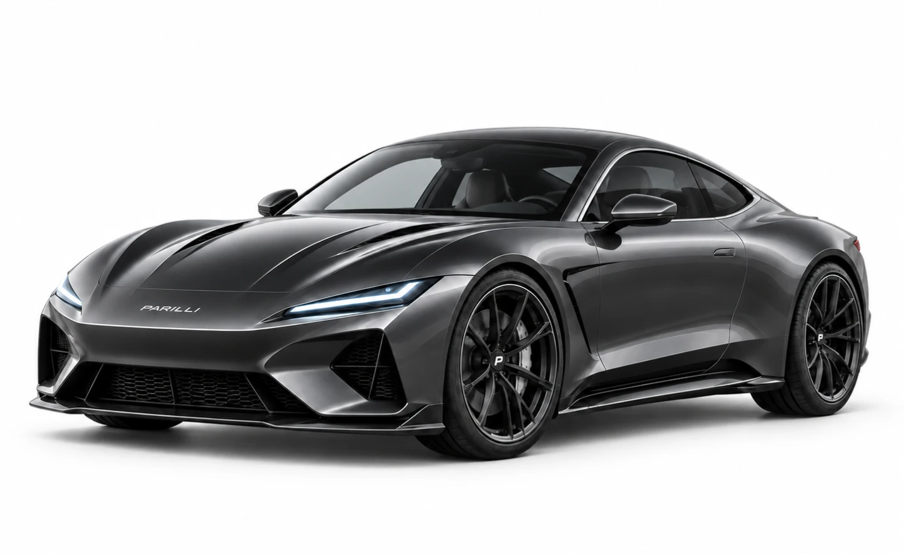

The fonts used are from Google Fonts.
All vehicle names, text, titles and descriptions were written by me.
All vehicle images were created using artificial intelligence for the fictional brand.

All the logos were made by me (Jean Franco Carnevali) using an italic Font.